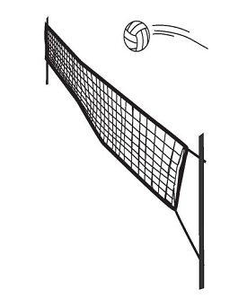

Volleyball Equipment
Volleyball is a simple game which doesn’t require any equipment other than a ball, a net and a flat court. Even two players can play and have fun with volleyball.
Net
Net is one meter long and 9.5 to 10 meter wide. It is tied vertically above the center line of the court to posts fixed at either sides of the court, at a distance of one meter from the sidelines. The center of the net should lie 2.43 meter above the ground for men and 2.24 meter for women. At the sides the net may be higher by a maximum of 2cm, however it should be tied at the same height at both the posts.
The court width is marked on the net with a tape and a flexible antennae of one meter extends from the tape marker on both sides of the net. These markings help the referee determine when the ball goes outside the court.
Ball
Volley ball a spherical ball of 65-67 cm circumference. It is made of leather or any synthetic material and weighs 260-280 g.
Volleyballs are available in various colors, however for international tournaments, FIVB approved balls should only be used.
Other Equipment
Players of a team are uniformly dressed in jerseys, shorts, socks and sport shoes. Jerseys of each team has a different color.